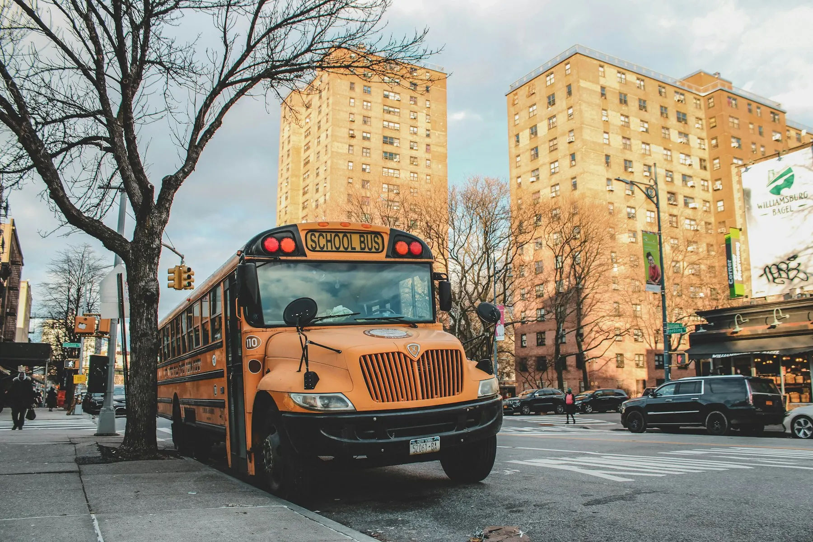

Journey safety
Safe habits shape every mile.
Clear expectations help students and families prepare for the stop, the ride, and the handover.
A shared routine
Four moments to practice.
01Wait
Stay visible and away from traffic.
02Board
Approach only after the bus stops.
03Ride
Remain seated and follow instructions.

Before pickup
Choose a visible waiting position.
Arrive before the indicative pickup time, stand back from the curb, and keep the approach path clear.
- Use the assigned stop
- Keep bags secure and pathways clear
- Wait for the vehicle to stop completely
Boarding & alighting
Pause, look, then move.
Approach
Use the clear pathHold
Use the handrailClear
Move away from the vehicleA
Seat first
Take the assigned or available seat promptly.
B
Aisle clear
Keep bags and belongings away from walkways.
C
Listen
Follow the driver or attendant’s instructions.
During the ride
A calm interior supports a safer journey.
Simple, repeatable behavior keeps attention on the road and allows the bus team to manage each stop clearly.
Parent information
Journey context, presented responsibly.
Route details, stop order, notices, and playback can help families understand a journey. Illustrative playback is not a substitute for confirmed operational communication.
View Route PlaybackIf plans change
Use a confirmed support channel.
- Check verified timing messages before leaving for the stop
- Never follow or approach a moving bus after a missed pickup
- Use the operator’s designated urgent contact for immediate concerns
Arrival & handover
End the route with the same clear routine.
Students should leave the bus only at the assigned stop, move to the expected meeting point, and follow the operator’s verified handover procedure.
Families should confirm local emergency contacts, authorized handover arrangements, and accessibility needs directly with the transport operator.
If plans change
Use confirmed support channels.
01
Route timing
Check verified service messages before leaving for the stop.
02
Missed pickup
Do not follow or approach a moving bus; contact the operator.
03
Urgent concern
Use the locally designated emergency channel rather than a website form.
Prepare together
Turn guidance into a familiar school-day habit.
Review the route, walk through the stop routine, and keep verified contact information accessible.
01
Safe Waiting
Stand back from the curb until the vehicle comes to a complete halt.
02
Supervised Boarding
Hold the handrail and follow the attendant's guidance to your seat.
✦ Verified Safety First
Safety is at the heart of every single journey.
From certified, background-checked drivers to active GPS corridor monitoring, we ensure a secure environment for every child.
Verified safety standards Real-time arrival notifications Background-checked drivers Zero setup fees